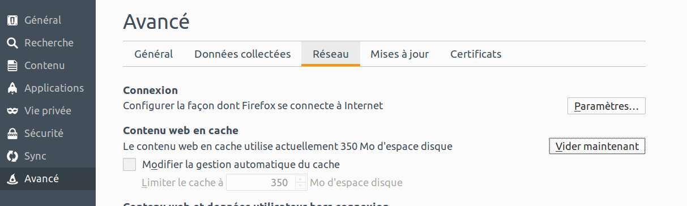
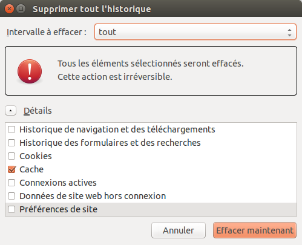

<body>
    <p>Deux possibilités s'offrent à vous</p>
<ul>
<li>Dans le menu des préférences</li>
<li>Dans le menu "Historique/supprimer l'historique récent" (oui le nom de ce menu est très mal choisi puisque cache et historique sont deux choses bien distinctes)</li>
</ul>
<p></p>
<p></p>
<p></p>
  </body>
